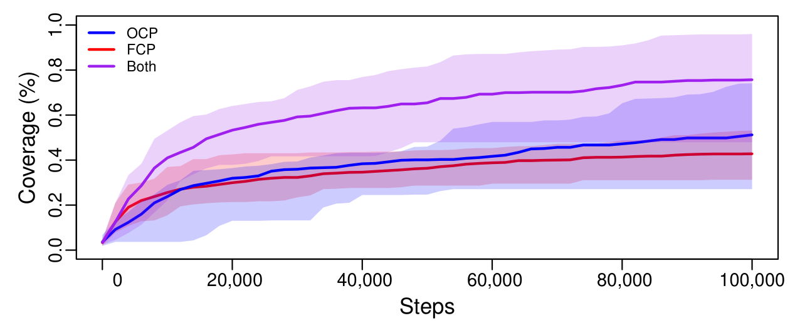
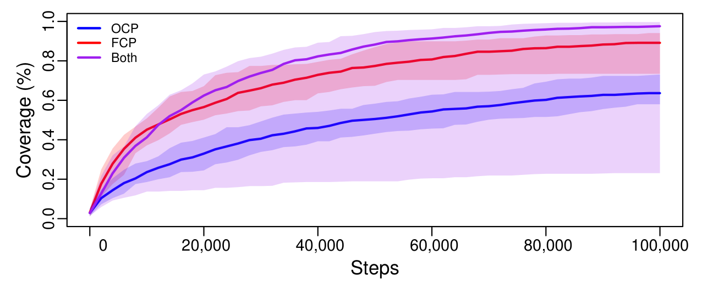
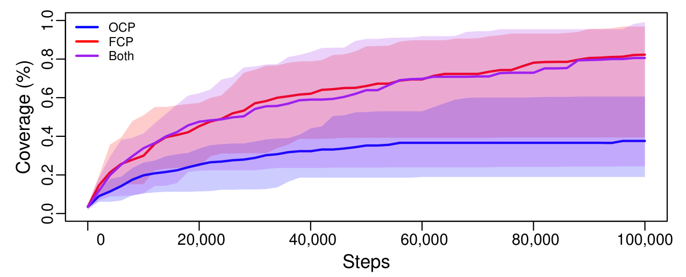
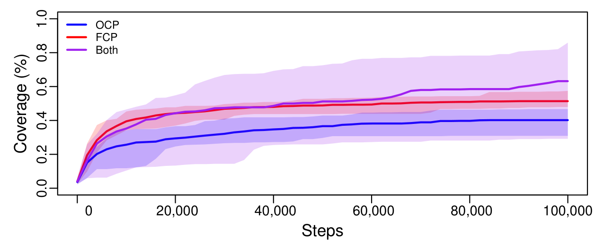
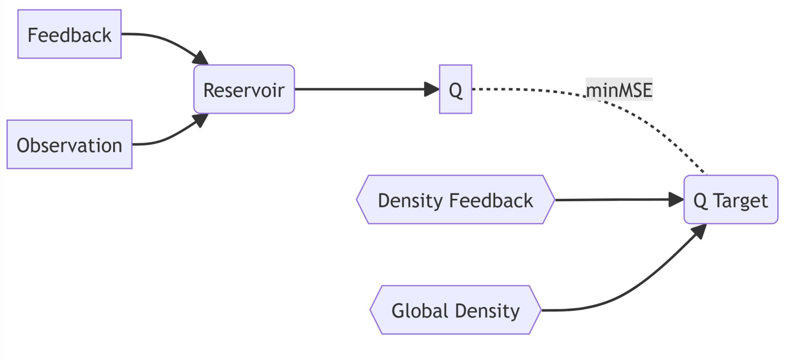

Maze exploration
An explorer should keep making progress when the world changes, familiar routes disappear, or there is no reset to start over.
In these blind mazes, the agent knows its coordinates but cannot see the walls or a map. M2E learns from the changing familiarity of its observations, using that feedback to navigate beyond known territory within its own lifetime.
The paper compares an observation-conditioned policy (OCP), a feedback-conditioned policy (FCP), and their combination (Both: full M2E). Go-Explore is represented here by the OCP-only, return-to-frontier approach; these are the paper’s controlled comparisons of that approach with M2E’s added feedback.
Feedback makes exploration more general
Full M2E improves coverage across fixed, randomized, continual, and noisy mazes. The advantage is especially clear when reliable return routes are unavailable. Feedback lets the explorer change course as experience becomes familiar.
Fixed recurring environments

Randomized environments

Continual environments

Environments with noise

Original Figure 2: median coverage across 32 runs per condition; shaded regions show the full range. “Both” is M2E. Read the paper ↗
Learned exploration also transfers: pretrained agents cover new mazes more reliably. The result is a reusable way of seeking novelty, rather than a route through one particular world.
How the explorer combines memory and feedback
M2E compares each new observation with its accumulated memories. Low memory density means the experience is unfamiliar. This novelty signal is both a reward to pursue and an input that tells the agent how its exploration is going.

Observations, the previous action, and reward and novelty feedback pass through a fixed recurrent network, or reservoir, which keeps a running memory of recent experience. A learned action-value network uses that memory to choose actions promising further novelty. The policy can therefore respond to changing familiarity immediately, between training updates and beyond known territory.
During offline training, stored trajectories are revisited and their novelty is recalculated against the expanded memory. This teaches the agent to reach places that are still on its exploration frontier, while retaining the feedback history that teaches it how to explore along the way.
For continuous control, the paper applies the same principle with DDPG, using separate observation and feedback pathways to choose continuously valued actions.